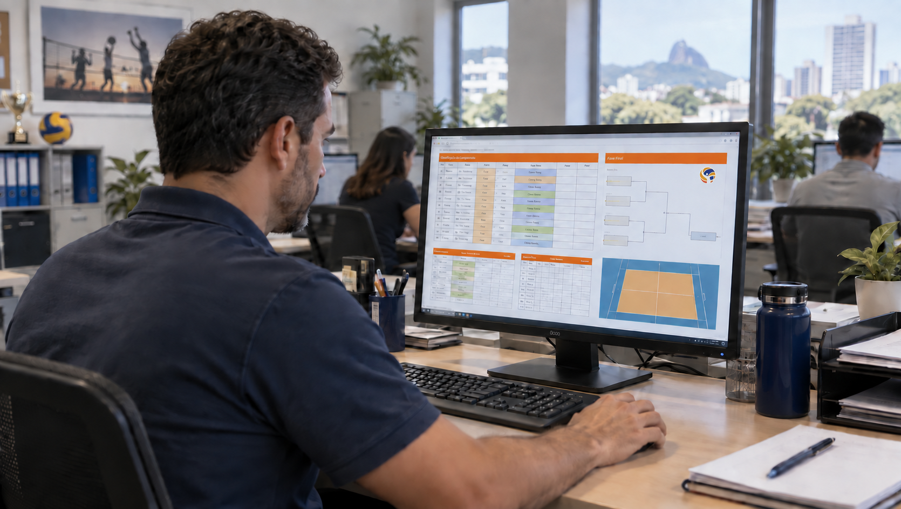
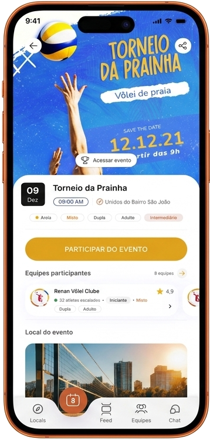
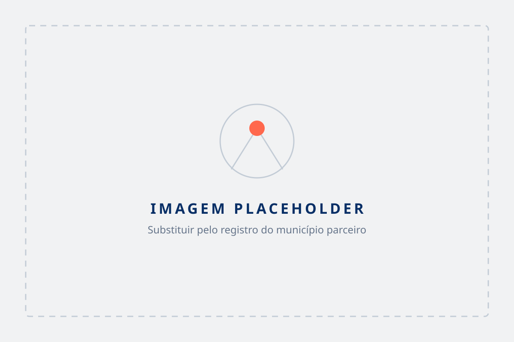

Organize
Eventos, equipes e competições em um só lugar.


O GRANDE DIFERENCIAL
Enquanto outras ferramentas terminam na tabela do campeonato, o Atleta do Vôlei continua criando relações antes, durante e depois de cada jogo.
Uma modalidade inteira organizada, comunicando-se e gerando dados — sem trocar o sistema que a Secretaria já usa.
Um aplicativo gratuito para encontrar equipes, quadras, campeonatos e pessoas que jogam vôlei na própria cidade.
UMA PLATAFORMA COMPLETA
Um ecossistema que une eficiência para a prefeitura e uma experiência que as pessoas realmente querem usar.
Cadastros, convites, escalações e comunicação centralizada para organizar melhor.
Crie torneios, gerencie inscrições, tabelas, resultados e rankings.
Valorize os espaços da cidade e facilite o acesso da população.
Carregando o mapa…
O diferencial que gera engajamento contínuo, pertencimento e visibilidade para o esporte local.
BENEFÍCIOS
Facilite o acesso da população às atividades esportivas e recupere quem não joga mais.
Centralize informações, equipes e eventos.
Tenha um canal direto com atletas e comunidade, divulgando ações esportivas para quem realmente quer participar.
Dê visibilidade a atletas, projetos, professores e iniciativas da cidade.
Conheça melhor a comunidade e suas necessidades.
Fortaleça a presença do esporte na vida da cidade.
CASE
Veja como o Atleta do Vôlei pode transformar a experiência esportiva de um município.
Números do primeiro município parceiro em breve.

PERGUNTAS FREQUENTES
A prefeitura ganha um espaço próprio dentro da plataforma para organizar eventos, equipes e espaços esportivos, além de um canal direto de comunicação com a comunidade.
A configuração inicial é rápida: mapeamos a realidade do município, personalizamos a plataforma e acompanhamos o lançamento junto com a equipe da gestão.
Não. Os próprios atletas criam seus perfis. A prefeitura acompanha a adesão e apoia a divulgação.
Não. O Atleta do Vôlei convive com a solução generalista de gestão esportiva do município. Ele não substitui o backoffice da Secretaria — potencializa especificamente a comunidade do vôlei.
Não. O aplicativo já existe, é nacional e o uso é gratuito para o cidadão. A prefeitura contrata a camada dedicada ao município.
Apresentamos o formato adequado ao porte do município e à realidade orçamentária da gestão. Fale com um especialista para receber as condições.
Preencha o formulário abaixo. Nosso time entra em contato para entender o cenário da sua cidade e estruturar a proposta.
LEVE O ATLETA DO VÔLEI PARA A SUA CIDADE
Descubra como podemos estruturar a solução para o seu município.